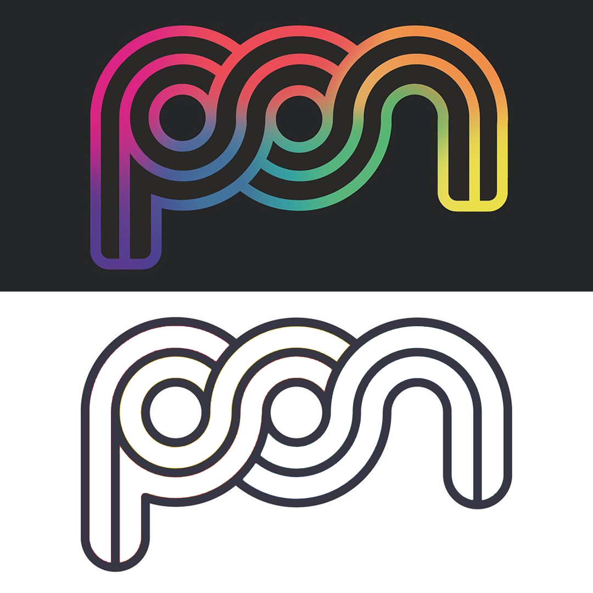
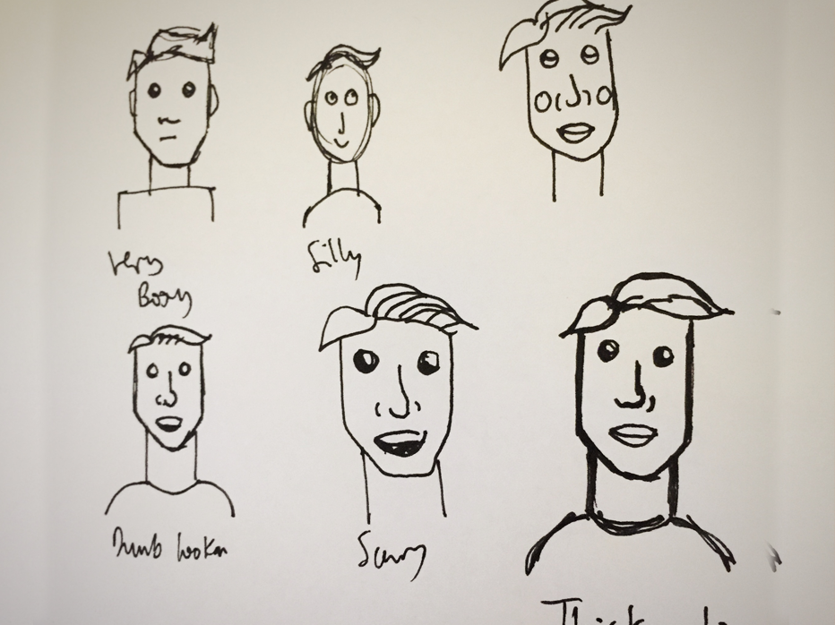

The Brief
As I've developed and grown as a designer, my style and tastes have changed. I wanted to rebrand myself. I really like the monogram I have always had but I thought it was time to be updated. I wanted a new colour palette that would be more versatile to be used in different formats.

My Approach
When starting my rebrand I took my orignal monogram into illustrator and started experimenting with it. I broke it done to pure line form, changed some shapes. I then started experimenting with different colour schemes, particularly in block colour.
I wanted to move away from using gradients to create a more versatile monogram, I found that my original monogram only worked on very dark backgrounds.
It was important to me though to keep the same colourful visuals for my new brand.
I think that a colourful logo not only accurately represents me as a designer and a brand, strong use of colour is always memorable so I wanted to keep that on board.

When I was happy with my new logo and its colour scheme I decided I wanted to add another element to my brand. I wanted to design an icon of myself, an icon self-portrait I guess.
I thought an icon of myself would make my brand more personable and it would also showase my illustration skills and brandind skills as I wanted it to fit in with the rest of my brand.
I sketched out lots of different styles to do my icon in. I wanted something that would fit with my monogram as part of my brand, this would require thick lines and strong colours.
Once I had a strong idea of what I was going for I went onto Illustrator to design the icon.